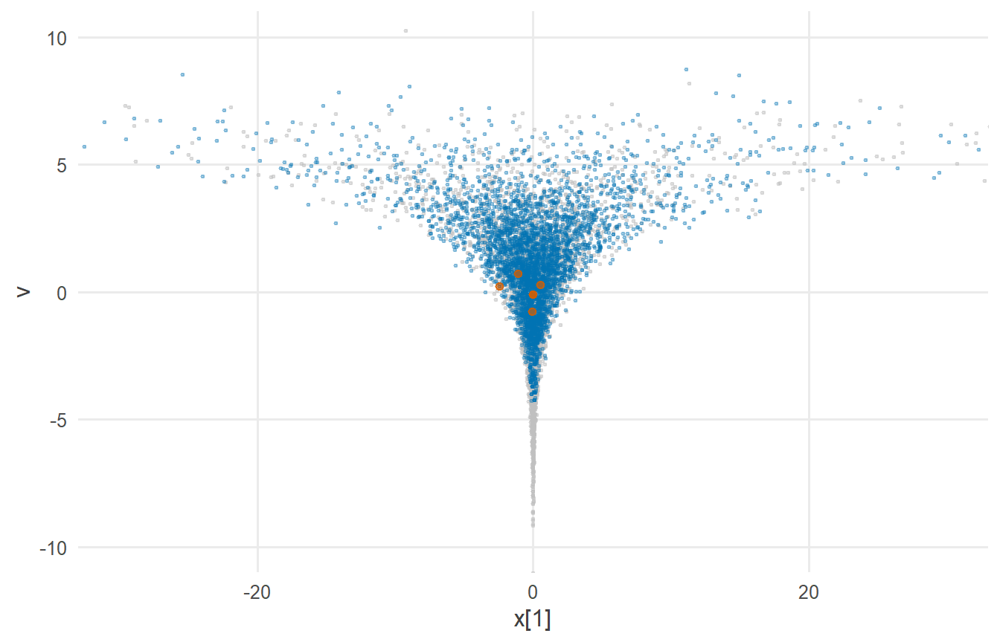
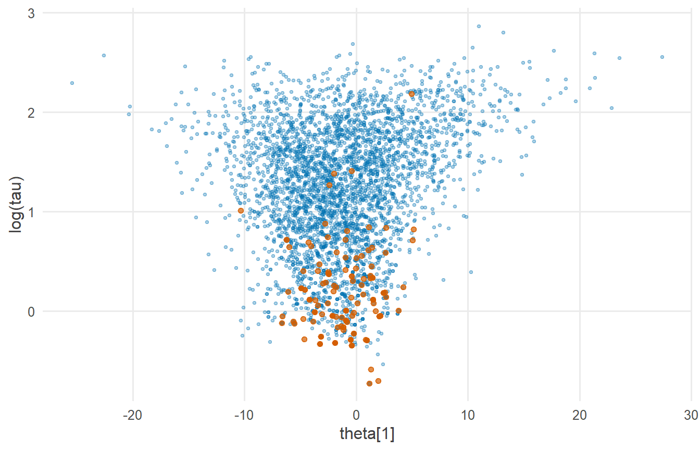

library(tidyverse)
library(cmdstanr)
library(posterior)
library(tidybayes)
source("R/theme.R")
source("R/utils.R")第 11 章 漏斗与发散
中心化写法的层级模型为什么会让采样器卡住？什么是“漏斗”几何？发散转移为什么必须认真对待？
第 10 章的层级模型运行顺利。但只要条件稍有变化，比如每组的数据更少、组与组之间的差异更小，同样的写法就会让 Stan 报出一连串警告：transitions ended with a divergence。
很多人第一次看到这个警告时，会调高 adapt_delta，或者干脆忽略它。本章说明为什么两种做法都不可取：发散转移是采样器在告诉你，后验的几何形状里有它走不过去的地方，而它没走过的地方，你的估计也就缺了一块。
1 本章要回答的问题
- 中心化写法的层级模型，为什么会让采样器卡住？
- 什么是“漏斗”几何？它从哪里来？
- 发散转移为什么是一个必须认真对待的信号？调高
adapt_delta能解决问题吗？
2 公式卡片
Neal 漏斗
\[ \begin{aligned} v &\sim \operatorname{Normal}(0,\ 3) \\ x_k &\sim \operatorname{Normal}\big(0,\ e^{v/2}\big), \qquad k = 1, \dots, 9 \end{aligned} \]
没有数据，只是一个十维分布。\(v\) 控制着 \(x_k\) 的尺度：\(v\) 很小时，\(x_k\) 被挤在 0 附近；\(v\) 很大时，\(x_k\) 可以散布得很开。
层级模型：已知标准误的组估计（中心化写法）
\[ \begin{aligned} y_j &\sim \operatorname{Normal}(\theta_j,\ s_j), \qquad s_j \text{ 已知} \\ \theta_j &\sim \operatorname{Normal}(\mu,\ \tau) \\ \mu &\sim \operatorname{Normal}(0,\ 5), \qquad \tau \sim \operatorname{Normal}^{+}(0,\ 5) \end{aligned} \]
第二个模型与第 10 章是同一类模型，只是数据形式不同：每个组只给出一个效应估计 \(y_j\) 和它的标准误 \(s_j\)。这是元分析中最常见的形式，著名的“八所学校”例子就是这种结构 (Gelman 等, 2013; Rubin, 1981)。
把两个模型并排看：层级模型中的 \(\tau\) 扮演着 Neal 漏斗中 \(e^{v/2}\) 的角色，\(\theta_j\) 扮演着 \(x_k\) 的角色。层级模型的先验部分，本身就是一个漏斗。
3 模拟数据
研究情境：8 项研究评估了同一种教学干预的效果，每项研究报告一个效应估计及其标准误。各研究样本量都不大，标准误较大；而研究之间真实效应的差异较小。
set.seed(2026)
J <- 8
mu_true <- 4 # average effect
tau_true <- 2 # between-study SD (small)
se <- c(15, 10, 16, 11, 9, 11, 10, 18) # standard errors (large)
theta_true <- rnorm(J, mu_true, tau_true)
sim_data <- tibble(
study = 1:J,
y = rnorm(J, theta_true, se),
se = se
)
sim_data#> # A tibble: 8 × 3
#> study y se
#> <int> <dbl> <dbl>
#> 1 1 6.74 15
#> 2 2 -2.90 10
#> 3 3 -2.25 16
#> 4 4 -4.20 11
#> 5 5 0.674 9
#> 6 6 -3.52 11
#> 7 7 -22.9 10
#> 8 8 26.2 18“每组数据少（标准误大）”加上“组间差异小（\(\tau\) 小）”，正是漏斗问题最严重的组合。
4 Stan 代码
Neal 漏斗：
// Chapter 11: Neal's funnel (centered parameterization)
//
// v ~ Normal(0, 3)
// x_k ~ Normal(0, exp(v / 2)), k = 1, ..., 9
//
// No data: we sample from this distribution directly.
parameters {
real v; // log variance of x
vector[9] x; // nine variables whose scale depends on v
}
model {
target += normal_lpdf(v | 0, 3);
target += normal_lpdf(x | 0, exp(v / 2));
}层级模型（中心化写法）：
// Chapter 11: Hierarchical model for group estimates (centered parameterization)
//
// y_j ~ Normal(theta_j, se_j) se_j known
// theta_j ~ Normal(mu, tau)
// mu ~ Normal(0, 5)
// tau ~ Normal+(0, 5)
data {
int<lower=1> J; // number of studies
vector[J] y; // estimated effect in each study
vector<lower=0>[J] se; // standard error of each estimate
}
parameters {
real mu; // average effect
real<lower=0> tau; // between-study SD
vector[J] theta; // true effect in each study
}
model {
target += normal_lpdf(mu | 0, 5);
target += normal_lpdf(tau | 0, 5);
target += normal_lpdf(theta | mu, tau); // centered: theta is drawn around mu
target += normal_lpdf(y | theta, se);
}这两个程序都是对公式卡片最直接的翻译，没有任何错误。问题不在代码，而在几何。
5 R 端运行
fit_funnel <- cmdstan_model("stan/ch11_neal_funnel.stan")$sample(
seed = 2026, chains = 4, parallel_chains = 4, refresh = 0
)#> Running MCMC with 4 parallel chains...
#>
#> Chain 1 finished in 0.1 seconds.
#> Chain 2 finished in 0.1 seconds.
#> Chain 3 finished in 0.0 seconds.
#> Chain 4 finished in 0.1 seconds.
#>
#> All 4 chains finished successfully.
#> Mean chain execution time: 0.1 seconds.
#> Total execution time: 0.4 seconds.mod_centered <- cmdstan_model("stan/ch11_centered.stan")
stan_data <- list(J = J, y = sim_data$y, se = sim_data$se)
fit_centered <- mod_centered$sample(
data = stan_data, seed = 2026, chains = 4, parallel_chains = 4, refresh = 0
)#> Running MCMC with 4 parallel chains...
#>
#> Chain 1 finished in 0.1 seconds.
#> Chain 2 finished in 0.1 seconds.
#> Chain 3 finished in 0.1 seconds.
#> Chain 4 finished in 0.1 seconds.
#>
#> All 4 chains finished successfully.
#> Mean chain execution time: 0.1 seconds.
#> Total execution time: 0.3 seconds.6 后验整理与可视化
6.1 Neal 漏斗：采样器进不了瓶颈
fit_funnel$diagnostic_summary()#> $num_divergent
#> [1] 0 0 5 1
#>
#> $num_max_treedepth
#> [1] 0 0 0 13
#>
#> $ebfmi
#> [1] 0.12940938 0.08524158 0.14240927 0.06430712fit_funnel$summary("v")#> # A tibble: 1 × 10
#> variable mean median sd mad q5 q95 rhat ess_bulk ess_tail
#> <chr> <dbl> <dbl> <dbl> <dbl> <dbl> <dbl> <dbl> <dbl> <dbl>
#> 1 v 1.39 1.22 2.23 2.15 -1.99 5.35 1.08 54.0 34.6发散转移、过高的 Rhat、极低的 ESS，全部出现了。更要紧的是，我们知道 \(v\) 的真实分布是 \(\operatorname{Normal}(0, 3)\)，可以直接比较：
tibble(
quantile = c("1%", "5%", "50%", "95%", "99%"),
stan_draws = quantile(fit_funnel$draws("v", format = "draws_matrix"),
c(0.01, 0.05, 0.5, 0.95, 0.99)),
true_normal = qnorm(c(0.01, 0.05, 0.5, 0.95, 0.99), 0, 3)
) |>
knitr::kable(digits = 2)| quantile | stan_draws | true_normal |
|---|---|---|
| 1% | -3.46 | -6.98 |
| 5% | -1.99 | -4.93 |
| 50% | 1.22 | 0.00 |
| 95% | 5.35 | 4.93 |
| 99% | 6.91 | 6.98 |
\(v\) 的左尾被严重截断：真实分布中 \(v\) 有 5% 的概率小于 \(-4.9\)，而采样器几乎从未到达那里。
set.seed(2026)
exact <- tibble(v = rnorm(4000, 0, 3)) |>
mutate(x1 = rnorm(n(), 0, exp(v / 2)))
funnel_draws <- fit_funnel$draws(c("v", "x[1]"), format = "df") |>
as_tibble() |>
rename(x1 = `x[1]`) |>
mutate(divergent = fit_funnel$sampler_diagnostics(format = "df")$divergent__ == 1)
ggplot(mapping = aes(x = x1, y = v)) +
geom_point(data = exact, colour = "grey75", alpha = 0.4, size = 0.6) +
geom_point(data = filter(funnel_draws, !divergent),
colour = f2s_colors[["post"]], alpha = 0.3, size = 0.6) +
geom_point(data = filter(funnel_draws, divergent),
colour = f2s_colors[["truth"]], size = 1.5) +
coord_cartesian(xlim = c(-30, 30), ylim = c(-10, 10)) +
labs(x = "x[1]", y = "v")
6.2 层级模型：同样的漏斗
fit_centered$diagnostic_summary()#> $num_divergent
#> [1] 7 79 69 43
#>
#> $num_max_treedepth
#> [1] 0 0 0 0
#>
#> $ebfmi
#> [1] 0.3483134 0.2613526 0.2942738 0.2886455fit_centered$summary(c("mu", "tau"))#> # A tibble: 2 × 10
#> variable mean median sd mad q5 q95 rhat ess_bulk ess_tail
#> <chr> <dbl> <dbl> <dbl> <dbl> <dbl> <dbl> <dbl> <dbl> <dbl>
#> 1 mu -1.82 -1.74 3.16 3.25 -7.08 3.16 1.01 427. 1081.
#> 2 tau 3.84 3.29 2.54 2.54 0.886 8.76 1.05 99.8 92.2层级模型出现了 198 次发散。把 \(\log\tau\) 与某一个 \(\theta_j\) 画在一起，标出发散的位置：
centered_draws <- fit_centered$draws(c("tau", "theta[1]"), format = "df") |>
as_tibble() |>
rename(theta1 = `theta[1]`) |>
mutate(divergent = fit_centered$sampler_diagnostics(format = "df")$divergent__ == 1)
ggplot(centered_draws, aes(x = theta1, y = log(tau))) +
geom_point(data = filter(centered_draws, !divergent),
colour = f2s_colors[["post"]], alpha = 0.3, size = 0.8) +
geom_point(data = filter(centered_draws, divergent),
colour = f2s_colors[["truth"]], size = 1.5) +
labs(x = "theta[1]", y = "log(tau)")
centered_draws |>
mutate(tau_region = if_else(tau < 1, "tau < 1", "tau >= 1")) |>
group_by(tau_region) |>
summarise(draws = n(), rate = mean(divergent), divergent = sum(divergent))#> # A tibble: 2 × 4
#> tau_region draws rate divergent
#> <chr> <int> <dbl> <int>
#> 1 tau < 1 411 0.285 117
#> 2 tau >= 1 3589 0.0226 81发散集中出现在 \(\tau\) 较小的区域，那里正是漏斗的瓶颈。
6.3 调高 adapt_delta 能解决吗？
adapt_delta 是预热阶段的目标接受率。调高它，采样器会选择更小的步长，从而更小心地前进。
fit_adapt <- mod_centered$sample(
data = stan_data, seed = 2026, chains = 4, parallel_chains = 4,
adapt_delta = 0.99, refresh = 0
)#> Running MCMC with 4 parallel chains...
#>
#> Chain 1 finished in 0.3 seconds.
#> Chain 4 finished in 0.4 seconds.
#> Chain 3 finished in 0.8 seconds.
#> Chain 2 finished in 1.0 seconds.
#>
#> All 4 chains finished successfully.
#> Mean chain execution time: 0.6 seconds.
#> Total execution time: 1.1 seconds.tibble(
adapt_delta = c(0.8, 0.99),
divergences = c(sum(fit_centered$diagnostic_summary()$num_divergent),
sum(fit_adapt$diagnostic_summary()$num_divergent)),
tau_ess_bulk = c(fit_centered$summary("tau", "ess_bulk")$ess_bulk,
fit_adapt$summary("tau", "ess_bulk")$ess_bulk)
)#> # A tibble: 2 × 3
#> adapt_delta divergences tau_ess_bulk
#> <dbl> <dbl> <dbl>
#> 1 0.8 198 99.8
#> 2 0.99 21 89.5发散减少了，但没有消失，\(\tau\) 的有效样本量依然很低。更小的步长只是让采样器在瓶颈处多挤进去一点，几何形状本身没有改变。
7 为什么这样写
7.1 漏斗从哪里来？
在层级模型中，给定 \(\tau\) 时，每个 \(\theta_j\) 的先验尺度就是 \(\tau\)。当 \(\tau\) 取较大的值时，\(\theta_j\) 可以在一个宽阔的范围内变化；当 \(\tau\) 趋近 0 时，所有 \(\theta_j\) 都被挤到 \(\mu\) 附近一个极窄的范围里。把 \(\tau\)（或 \(\log\tau\)）作为纵轴，\(\theta_j\) 作为横轴，后验的形状就像一个漏斗：上面开口宽，下面瓶颈窄。
当数据信息很弱时（标准误大、每组观测少），似然几乎不能把 \(\theta_j\) 钉在某个位置，后验的形状主要由先验结构决定，漏斗就完整地保留了下来。当 \(\tau\) 的后验又有相当的概率质量靠近 0 时（组间差异小），采样器就必须深入瓶颈。这两个条件，恰好是本章数据的设定。
7.2 为什么采样器会在漏斗中“失控”？
HMC 沿着一条模拟的物理轨迹移动，轨迹由一系列固定步长的跳步组成（第 2 章已经数过它们的次数）。步长是在预热阶段调好的，整个采样过程中保持不变。
问题在于，漏斗不同位置需要的步长相差悬殊：
- 在开口处，后验很平缓，大步长可以高效前进；
- 在瓶颈处，后验的曲率极大，只有非常小的步长才能跟上它的形状。
用开口处合适的步长走进瓶颈，数值积分就会严重偏离真实轨迹，能量误差急剧增大，轨迹“飞”了出去。Stan 检测到这种情况，就把这次转移标记为发散，并提前终止轨迹。
7.3 为什么发散必须认真对待？
发散不只是效率问题，而是偏差问题。
每次发散都意味着采样器试图进入某个区域，却被弹了回来。于是那个区域（漏斗的瓶颈，即 \(\tau\) 很小的地方）被系统性地少抽样了。Neal 漏斗中 \(v\) 的左尾被截断，就是这种偏差的直接证据。在层级模型中，这意味着 \(\tau\) 的小值被低估了可能性，进而影响所有 \(\theta_j\) 的收缩程度。
因此，即使只有少量发散，也应当认真对待。它们是一面旗帜，标出了采样器无法可靠探索的区域 (Betancourt, 2017; Betancourt & Girolami, 2015)。
7.4 为什么调参只能缓解，不能根治？
调高 adapt_delta 会让步长变小，采样器能够更深地进入瓶颈，发散因此减少。但漏斗是无底的：\(\tau \to 0\) 时，瓶颈可以无限窄。无论步长多小，总有更窄的地方。同时，步长变小意味着每次迭代要走更多跳步，运行时间随之增加。
根治的办法是改变几何形状本身：换一种参数化方式，让采样器面对的不再是漏斗。这就是下一章的主题。
8 常见错误
| 错误做法 | 后果 | 正确做法 |
|---|---|---|
| “只有 1% 的发散，可以忽略” | 少量发散也可能意味着某个区域被系统性漏掉 | 找出发散的位置，分析其原因 |
| 增加迭代次数 | 不改变几何形状，发散依旧，偏差依旧 | 改变参数化 |
只调高 adapt_delta |
发散减少但通常不会消失，运行变慢 | 先考虑非中心化，再把 adapt_delta 作为辅助 |
| 删除发散的抽样再做推断 | 让偏差更严重：被删掉的恰恰是难以到达的区域 | 发散是诊断信号，不是可以剔除的“坏样本” |
| 把发散归咎于“数据有问题” | 数据并没有问题，问题在参数化与数据的组合 | 理解漏斗出现的条件 |
9 练习
练习 1 发散在哪里？
对 fit_centered，按 \(\tau\) 的十分位数分成 10 组，计算每组中发散转移的比例。
提示参考答案
centered_draws |>
mutate(tau_decile = ntile(tau, 10)) |>
group_by(tau_decile) |>
summarise(tau_range = sprintf("%.2f-%.2f", min(tau), max(tau)),
divergent_rate = mean(divergent))#> # A tibble: 10 × 3
#> tau_decile tau_range divergent_rate
#> <int> <chr> <dbl>
#> 1 1 0.48-0.99 0.282
#> 2 2 0.99-1.48 0.132
#> 3 3 1.48-2.06 0.0525
#> 4 4 2.06-2.65 0.015
#> 5 5 2.65-3.29 0.0025
#> 6 6 3.29-4.06 0.005
#> 7 7 4.06-4.84 0.0025
#> 8 8 4.84-5.95 0
#> 9 9 5.95-7.42 0
#> 10 10 7.43-17.51 0.0025发散比例在 \(\tau\) 最小的几组中最高，随 \(\tau\) 增大迅速下降。这正是漏斗的特征：问题集中在瓶颈处。
练习 2 让数据更有信息
把所有标准误除以 20（即每项研究的样本量大得多，标准误远小于组间标准差 \(\tau\)），重新生成数据并拟合中心化模型。发散还会出现吗？为什么？
提示参考答案
set.seed(2026)
theta_ex2 <- rnorm(J, mu_true, tau_true)
se_small <- se / 20
y_ex2 <- rnorm(J, theta_ex2, se_small)
fit_ex2 <- mod_centered$sample(
data = list(J = J, y = y_ex2, se = se_small),
seed = 2026, chains = 4, parallel_chains = 4, refresh = 0
)#> Running MCMC with 4 parallel chains...
#>
#> Chain 1 finished in 0.0 seconds.
#> Chain 2 finished in 0.0 seconds.
#> Chain 3 finished in 0.0 seconds.
#> Chain 4 finished in 0.0 seconds.
#>
#> All 4 chains finished successfully.
#> Mean chain execution time: 0.0 seconds.
#> Total execution time: 0.3 seconds.fit_ex2$diagnostic_summary()$num_divergent#> [1] 0 0 0 0数据信息足够强时，似然把每个 \(\theta_j\) 钉在 \(y_j\) 附近，后验不再受先验的漏斗结构支配，\(\tau\) 也离 0 较远。中心化写法因此运行顺利。
如果只把标准误除以 10，标准误仍与 \(\tau\) 处于同一量级，你会发现发散依然存在。漏斗问题的严重程度，取决于每组数据的标准误与组间标准差 \(\tau\) 之间的相对大小，而不是标准误的绝对大小。
练习 3 组数更多能解决漏斗吗？
保持标准误和 \(\tau\) 不变，把研究数从 8 增加到 32（标准误循环使用），中心化模型的发散会消失吗？
提示参考答案
set.seed(2026)
J_big <- 32
se_big <- rep(se, 4)
theta_big <- rnorm(J_big, mu_true, tau_true)
y_big <- rnorm(J_big, theta_big, se_big)
fit_ex3 <- mod_centered$sample(
data = list(J = J_big, y = y_big, se = se_big),
seed = 2026, chains = 4, parallel_chains = 4, refresh = 0
)#> Running MCMC with 4 parallel chains...
#>
#> Chain 1 finished in 0.1 seconds.
#> Chain 2 finished in 0.1 seconds.
#> Chain 3 finished in 0.1 seconds.
#> Chain 4 finished in 0.1 seconds.
#>
#> All 4 chains finished successfully.
#> Mean chain execution time: 0.1 seconds.
#> Total execution time: 0.3 seconds.fit_ex3$diagnostic_summary()$num_divergent#> [1] 18 129 26 68通常不会消失。更多的研究能让 \(\tau\) 估计得更准，但每项研究的信息仍然很弱，而真实的 \(\tau\) 很小，后验依然要深入漏斗的瓶颈。组数多，并不能替代每组信息不足。
练习 4 为什么不能删掉发散的抽样？
有人提议：“既然发散的转移不可靠，把它们删掉，剩下的抽样不就可靠了吗？”请解释这个想法错在哪里。
提示参考答案
发散的转移并不是“错误的抽样”，而是“采样器无法到达某个区域”的信号。问题不在于这些点本身，而在于它们所指向的区域（漏斗的瓶颈）整体上被抽样不足。
删掉发散点之后，瓶颈附近的抽样更少了，偏差反而更严重。正确的做法是改变参数化，让采样器能够正常进入那个区域，从而得到无偏的抽样。
10 小结
- 层级模型的先验 \(\theta_j \sim \operatorname{Normal}(\mu, \tau)\) 本身就是一个漏斗：\(\tau\) 越小，\(\theta_j\) 越被挤压。
- 数据信息弱、组间差异小时，后验保留了漏斗形状，采样器必须深入瓶颈。
- 固定步长无法同时适应开口和瓶颈，在瓶颈处数值积分失控，就产生了发散。
- 发散意味着某些区域被系统性地少抽样，导致偏差。调高
adapt_delta只能缓解，根治需要改变参数化。
11 延伸
- 下一章：第 12 章 非中心化，一行改写让漏斗消失。
- 漏斗问题在 Stan 模型库的层级与时空模型中反复出现，那里的模型默认使用非中心化写法。
12 参考资料
- Neal 漏斗最初在 Neal (2003) 中作为难以抽样的分布提出。
- 层级模型中的漏斗几何与 HMC 的关系，见 Betancourt & Girolami (2015)。
- 发散转移的直观解释见 Betancourt (2017)。
- “八所学校”数据及其层级分析见 Rubin (1981) 与 Bayesian Data Analysis 第 5 章 (Gelman 等, 2013)。
- Stan User’s Guide 中 Efficiency Tuning 一章关于重新参数化的讨论 (Stan Development Team, 2026)。
Betancourt, M. (2017). A Conceptual Introduction to Hamiltonian Monte Carlo. https://arxiv.org/abs/1701.02434
Betancourt, M., & Girolami, M. (2015). Hamiltonian Monte Carlo for Hierarchical Models. 收入 S. K. Upadhyay, U. Singh, D. K. Dey, & A. Loganathan (编), Current Trends in Bayesian Methodology with Applications (页 79～101). CRC Press.
Gelman, A., Carlin, J. B., Stern, H. S., Dunson, D. B., Vehtari, A., & Rubin, D. B. (2013). Bayesian Data Analysis (3 版). CRC Press.
Neal, R. M. (2003). Slice Sampling. The Annals of Statistics, 31(3), 705～767. https://doi.org/10.1214/aos/1056562461
Rubin, D. B. (1981). Estimation in Parallel Randomized Experiments. Journal of Educational Statistics, 6(4), 377～401. https://doi.org/10.3102/10769986006004377
Stan Development Team. (2026). Stan User’s Guide (Version 2.40). https://mc-stan.org/docs/stan-users-guide/